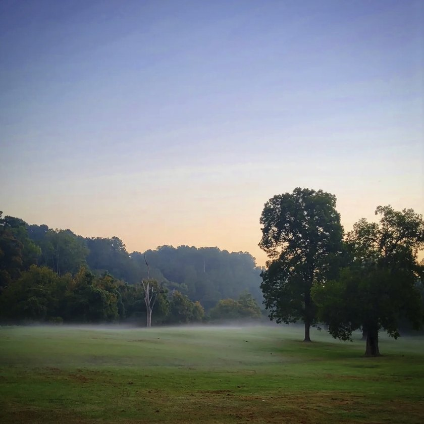
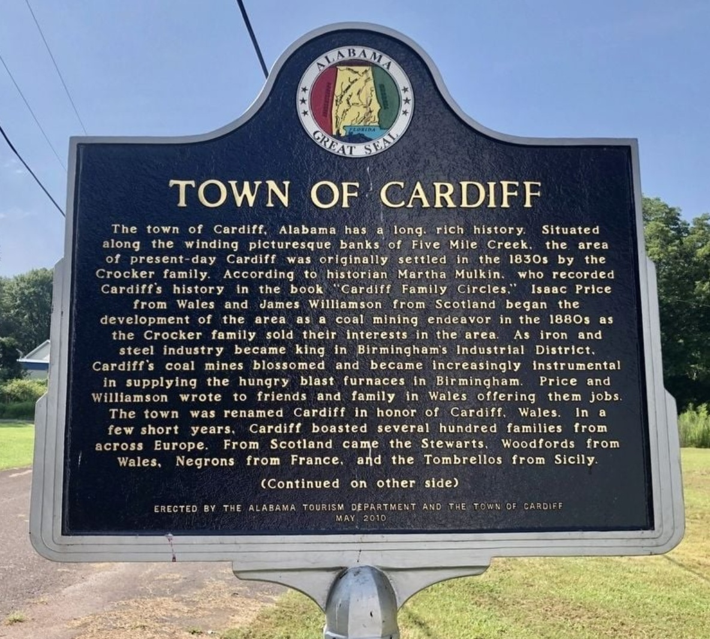
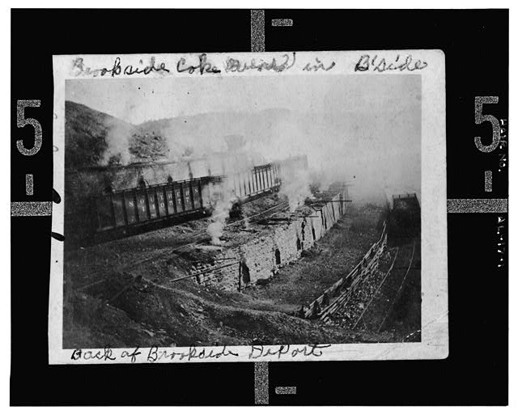

Heritage
Archive →⛏️The record
Graysville, Cardiff, and Brookside sit in a row along the last stretch of Five Mile Creek, and all three of them are here for the same reason. Somebody found coal under the farmland, could not hire enough men to dig it, and went looking in Wales, then in Scotland, and then on the far side of the Austro Hungarian Empire. What came back was a Russian Orthodox parish in Alabama, families from four countries living in a town of a few hundred people, and three places that have been arguing with the water ever since.
Everything here names where it came from, and where a date is not known it says so plainly. There is a good chance somebody reading this knows an answer these pages do not.
Seven chapters
1830s to nowWhat follows is the whole run in order, from the first farms on the bottomland to the greenway that goes over the old rail bed. Each chapter takes a stretch of years and sets the three towns inside it together, because they happened to each other. The mine at Cardiff opened six years before the one at Brookside. Graysville lost its charter seven years after the Brookside mine shut.
Each chapter opens onto its own page, where the full dated record for those years is kept, every entry carrying the source it came from and a link to go and read it. The record is not evenly thick and the count under each chapter says how thick: Brookside was a Sloss town and got written about, Graysville was neither, and some decades of it are close to blank.
Before the coal
to 1879
It is easy to assume the coal was always the point here. For about fifty years it was not. Two of the three towns already had people living in them, and neither of them had any reason yet to be a town.
Read this chapter 3 entriesThe camps
1880 to 1889Cardiff went first. Two men bought the land in 1880, opened a mine, named it for home, and then filled the town by writing letters to Wales. Six years later Brookside did the same thing on a larger scale, and Sloss money was behind it inside a year.
Read this chapter 7 entriesCharters and churches
1890 to 1899
This is the decade the camps became towns. All three took a charter inside ten years, and the families filling Brookside's houses had come from the far side of the Austro Hungarian Empire to do it.
Read this chapter 8 entriesThe peak
1900 to 1919For twenty years the valley ran at full tilt. Nearly everything these three towns still get measured against was built, counted, or finished inside these twenty years, which is also why the decade ends the way it does.
Read this chapter 10 entriesThe mine closes
1920 to 1929
It ended inside a year. The mine that built Brookside closed in 1920 and never reopened, the ovens came down, and seven years later the state took Graysville's charter away.
Read this chapter 4 entriesAfter the coal
1930 to 1999
Seventy years in one chapter, because the three spent it going three different ways. Cardiff emptied out, Graysville came back from the dead and grew, and Brookside held on and reached its own high water mark in 1980.
Read this chapter 10 entriesThe creek comes back
2000 on
The water that carried the mine waste is the thing being cleaned up and walked along now, and the rail bed that hauled the coal out is the trail. None of which has stopped the creek flooding, and 2003 is still the year people here measure a storm against.
Read this chapter 11 entriesThe three towns
West to eastThe same three places side by side, which is the comparison the chapters keep making and this is the short version of. They were built for different reasons and they went different ways, and that is the part that gets flattened when people say the coal towns. Graysville had a gin, never belonged to a company, and is the largest of the three today. Cardiff was one mine and is now fifty two people. Brookside was Sloss from the ground up, and the parish those miners founded still serves dinner every November.
Incorporated twice
The one that was never a company town. Graysville had the gin, and it kept a farm town's shape while its neighbors were being built around a mine shaft. It is also the only one of the three that has had to incorporate twice.
One mine, and one fire
Named by a Welshman for the place he came from, built on one mine, and burned down once. Cardiff has about five hundred fewer people now than it had the year it took its charter.
The company town
A Sloss company town that ended up with a Russian Orthodox parish, a Catholic parish, and 288 coke ovens, because the coal needed miners and the miners were in eastern Europe.
This is assembled reading rather than original research, and the difference is worth being plain about. Everything here comes from material that is public and online: the Encyclopedia of Alabama, Bhamwiki, Wikipedia, the Library of Congress, the Freshwater Land Trust, and the marker standing on the roadside in Cardiff. Every entry carries the one it came from with a link, so none of it asks to be taken on trust.
That leaves a great deal out. When a chapter says something is not recorded, it means it has not turned up in any of those, not that nobody ever wrote it down. Courthouse deeds, church registers, company payrolls and the boxes in people's closets are mostly not on the internet, and a good deal of what actually happened in these three towns is only in them. Where the sources disagree with each other, which they do on a couple of the population counts, this page follows the census.
So if you know one of these answers, there is a fair chance you know more about it than this page does. That is not a problem with the page so much as the shape of the thing, and it is why the address at the bottom is there.
- Alabama Communities of Excellence, Graysville
- Alabama News Center, Five Mile Creek Greenway now the longest multiuse trail in Jefferson County
- Bhamwiki, Brookside
- Bhamwiki, Cardiff
- Czechoslovak Genealogical Society International, Slovaks and Carpatho-Rusyns in Brookside, Alabama
- Encyclopedia of Alabama, Brookside
- Encyclopedia of Alabama, Cardiff
- Encyclopedia of Alabama, Graysville
- Freshwater Land Trust, District purchases rail corridor, opens new trail
- Freshwater Land Trust, Five Mile Creek
- Library of Congress, Brookside Coal Mine, Beehive Coke Ovens, Mount Olive Road north of the Five Mile Creek bridge
- Town of Cardiff marker, Erected by the Alabama Tourism Department and the Town of Cardiff, May 2010
- Wikipedia, Brookside, Alabama
- Wikipedia, Cardiff, Alabama
- Wikipedia, Graysville, Alabama
Fill in a gap
If you have a photograph, a date, a name, or a story about any of the three towns, send it. Corrections are just as welcome as additions, and this page gets better every time somebody who was there writes in.
fivemilec@gmail.com